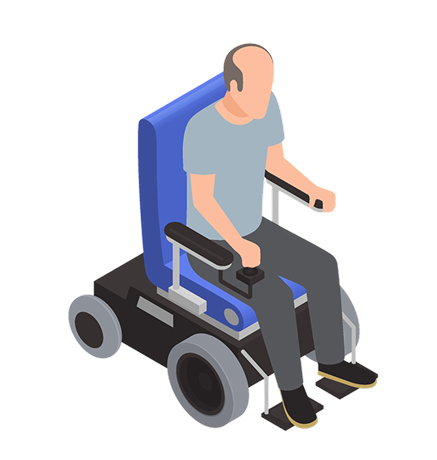

재난 알림은 "스스로 대피할 수 있는 사람"을 전제로 만들어져 있습니다. WATERLINE은 가장 먼저, 가장 늦게까지 위험에 놓이는 사람에서 출발해 알림부터 구조·지원까지의 흐름을 다시 디자인했습니다.

정민수(52) · 경수 손상 사지마비
서울 관악구 반지하 · 활동지원사 퇴근 후 혼자 있는 밤 (가상 퍼소나)
워치의 음성·진동과 "괜찮아" 한마디 응답으로, 신체 조건과 상관없이 위험을 알고 도움을 요청할 수 있게 합니다.
"이렇게 도와주세요"를 당사자가 직접 등록하고, 출동도 본인 동의로 시작합니다. 보호의 대상이 아니라 결정의 주체로 둡니다.
조력자·이웃·지자체·복지관이 같은 정보를 보고 각자의 역할을 맡도록, 개인의 대피를 공동체의 대응으로 바꿉니다.
스캔은 동의 후에만, 사람은 지우고 공간 구조만 저장합니다. 필요한 사람에게 필요한 만큼만 공유합니다.
위급한 밤에는 화면을 오래 읽을 여유가 없습니다. 한 화면에 한 가지 판단만 담고, 위험 단계는 색·글자·소리가 같은 뜻을 반복해서 전하도록 설계했습니다.
단계 라벨 → 큰 글씨 한 문장 → 말로 답하는 법 순서. 버튼을 누르지 않아도 "네", "괜찮아"로 응답합니다.
화면을 보지 못해도 소리와 진동 패턴만으로 지금이 몇 단계인지 구분할 수 있습니다.
국면(예방·구조·지원) · 시각 · 단계명을 모든 버튼에서 같은 줄에 두어 가로로 훑어 비교합니다.
사용자 · 조력자 · 지자체 버튼으로 내 화면만 밝게 남기고 나머지는 어둡게, 모바일에선 숨깁니다.
조력자 앱은 도착 시간 → 옮길 물품 → 진입 경로 → 돕는 법 순으로, 행동할 순서대로 쌓입니다.
어두운 배경 위 밝은 라벨: 한밤중 눈부심을 줄이고, 모든 라벨이 WCAG AAA(7 : 1) 이상입니다.